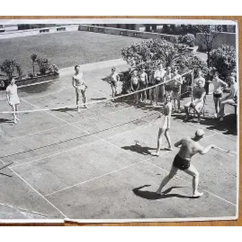

- History -Finding out about Badminton's past and it's evolution to the current
Badminton has a long history that dates back to ancient games played in Asia and Europe. The modern version of the sport was developed in the 19th century in British India and later brought to England, where the official rules were created. Since then, it has grown into a global sport played at both recreational and professional levels, including the Olympics.
This is where you can find out extra stuff and find out what badminton is
Badminton is a fast-paced racquet sport played by either two players (singles) or four players (doubles). The aim is to hit a shuttlecock over the net so that it lands in the opponent’s court without being returned. It requires a combination of speed, agility, and precision, making it both physically and mentally challenging.
 - Players -
- Players -
Many important players and information about them
Many professional badminton players have helped grow the sport and inspire new generations. Players compete in international tournaments such as the Olympics, World Championships, and the BWF World Tour. Top athletes are known for their speed, powerful smashes, and excellent control during long rallies.
Home
"Badminton is a fast-paced and strategic racquet sport played worldwide, known for its quick reflexes, precise shots, and dynamic rallies. Whether played casually in a backyard or competitively on a professional court, it combines agility, technique, and mental focus. This site explores the history, rules, techniques, and major tournaments of badminton, offering a resource for people to explore."